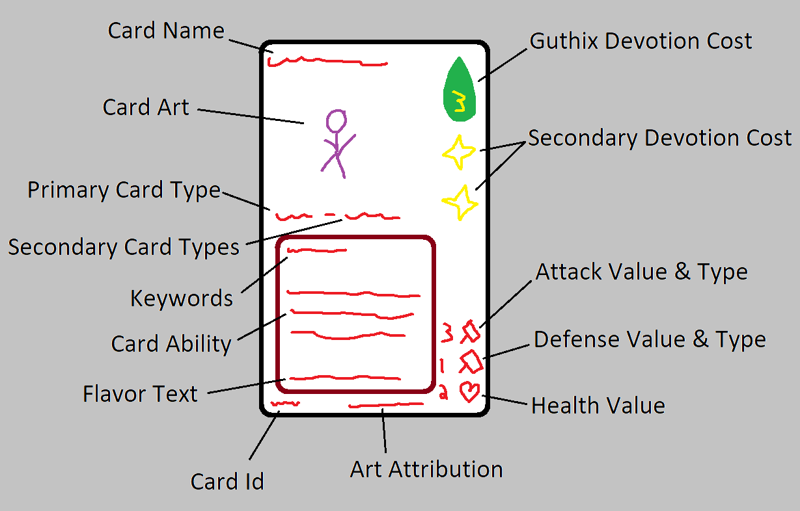
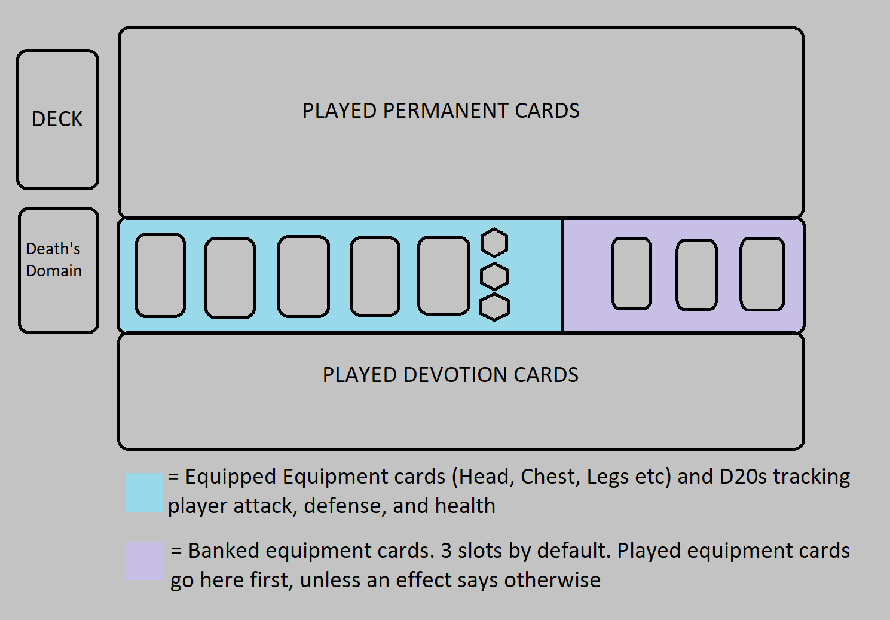

Official Rulebook
Overview
This page is the official rulebook of RuneMonsters. If you are looking for in-depth descriptions on the structure of the game, a specific mechanic, or want to look up a Keyword - you're in the right place. If you are looking for a beginner's guide on how to play, you may want to look at the How To Play page instead.
If you feel a specific keyword, mechanic, or other piece of the game is not described here or not adequately described here, please either reach out on Discord or submit a Github issue.
Anatomy of a Card

- Card Name: Surprisingly, the name of the card.
- Card Art: A pic of a goofy goober, probably.
- Primary Card Type: the type of the card. See Types of Cards below.
- Secondary Card Types: the secondary types of the card. See Types of Cards below.
- Keywords: The keywords that the card has, if any. See Keywords below.
- Card Ability: The effect the card has, if any.
- Flavor Text: Hopefully something cool or funny.
- Card Id: Unique identifier of the card. As an example: GIEL-EN000101. GIEL is the set identifier, EN the internationalization code, 0001 the card id, and 01 the art id.
- Art Attribution: Credit to whoever made the art.
- Guthix Devotion Cost: Guthix is the god of balance, so he accepts any Devotion. This value is the amount of Devotion of any type that must be paid to play the card. If the card has no Guthix Devotion cost displayed, this means it an implicit Guthix Devotion cost of 0.
- Secondary Devotion Cost: The other gods are not so accepting, and must be given Devotion specifically to them. Any card with a secondary Devotion cost must have one Devotion paid of that type per icon displayed here.
- Attack Value & Type: The amount of attack the card has, and its type. See Mechanics for more details.
- Defense Value & Type: The amount of defense the card has, and its type. See Mechanics for more details.
- Health Value: The amount of health a card has.
Board Layout

- Deck: Your big, massive deck.
- Death's Domain: Cards that have been played and removed, or discarded or milled. Cards here cannot be played again unless specified otherwise by a card effect.
- Permanent Field: Where played cards that are not equipment or devotions go. Any monster or other card that remains on the board goes here, and all cards that are only in effect temporarily, such as a spell, go here until they are resolved.
- Equipment Field: All equipped equipment cards go here. You can only have one equipment of each subtype (Chest Armour, Leg Armour, etc) equipped at a time. The 3 d20s here should be consistently updated to reflect the your overall attack, defense, and HP values. See Mechanics for more details.
- Equipment Bank: Equipment cards go here when initially played and then may be equipped the following turn by paying 1 Guthix cost, unless specified otherwise by a card effect. In case you are a UIM and do not understand what a bank is, it is a place to store things - similar to an inventory. See Mechanics for more details.
- Devotion Field: Where standard Devotion cards go, as well as any other cards you have devoted to a god. See Mechanics for more details.
Types of Cards
There are two categories of card types, the Primary card types and the Secondary card types. Primary card types determine how a card is played and generally what rules apply to it. Secondary card types are simply labels and have no direct rules apply to them - instead, card effects are what interact with these. Lastly, a card will only ever have one Primary card type but can have many Secondary card types.
Primary Types
The Primary card types are as follows:- Devotion Cards
- Equipment Cards
- Monster Cards
- Spell Cards
-
Token Cards
- Monster Token
- Equipment Token
- Spell Token
Secondary Types
There are far too many Secondary card types to list out here. See the Card Browser to view all the various types.
Legendary SuperType
A card's Primary type may have the prefix of 'Legendary'. This generally notes that it's a powerful card. You may only have 1 copy of each Legendary card in your deck.
Mechanics
Devotion
Devotion is how you play your cards - it is this game's mana system. Each card will have a specific god or gods you must pay Devotion to in order to play it. The one special case here is Guthix - as the god of balance, Guthix accepts Devotion in any form, and as such you can use Devotion to a different god towards the Guthix cost of a card.
Devotion cards can grant their respective Devotion only once each turn. They cost no Devotion to play themselves, unless otherwise specified. They are played into the Devotion Field on your board. In addition, once per turn you can also devote ANY card in your hand to a god. If you do this, you place the card face down in your Devotion Field and declare what god it will be devoted to. That card then acts as a Devotion card to that god, following all the same rules. You cannot play that card for the rest of the game unless otherwise specified by a card effect.
The Adventurer & Equipment
Each player starts the game with an Adventurer. The Adventurer's stats start at 1 Attack, 1 Defense, and 20 Health, and if a player's Adventurer falls to 0 Health or below, that player loses the game. Once per turn, an Adventurer may attack an opposing monster or player. If the Adventurer successfully kills an opposing monster attacking this way, the Adventurer gains 1 Attack.
Equipment cards bolster the Adventurer's stats. When played, an equipment card initially goes into the Equipment Bank on your board. The following turn or later, you may then pay 1 Devotion to Guthix to equip that card to your Adventurer, unless specified otherwise by a card effect. If your Adventurer already has an equipment of that type equipped already, the two equipments swap with the previously equipped equipment card going back into your Equipment Bank. If your Equipment Bank is full when you play an equipment card, you may choose one of the cards in your Equipment Bank to discard.
The Adventurer's attack and defense type are dependent on equipped gear (See Attack & Defense Types), but when no gear is overriding them the Adventurer's attack type is Crush and the defensive type is None.
It is important to note that combat involving an Adventurer is different than combat between two Monsters - the Adventurer only deals its attack damage when attacking. This means monsters attacking the Adventurer do not take damage back.
Monsters
Monster cards go onto the Permanent Field when played. Similar to the Adventurer, a monster can only attack or use an active effect once each turn. When a monster is killed or otherwise removed, it goes to Death's Domain unless specified otherwise by a card effect.
Monsters, just like the Adventurer, have attack, defense, and health. Each monster has an attack type and defense type. See the next section for details. When a monster is dealt damage in an attack phase or spell cast greater than it's health, it dies and goes to Death's Domain.
Attack & Defense Types
Attack and defense types provide additional depth to how combat plays out. The types are:
- Crush
- Slash
- Stab
- Air
- Water
- Earth
- Fire
- Bolt
- Arrow
- Dart
- None
When a monster or Adventurer attacks, it deals its attack value to the target's defense value first, then the remaning amount is dealt to the target's health. However, if the attacking monster's or Adventurer's attack type matches the defending monster or Adventurer's defense type, the defense value is ignored and the attack damage is dealt directly to the target's health.
The special None type means that the attack value is always dealt to the defensive value, regardless of the other type in the interaction.
Spells
Spells are single use cards, often with powerful effects. When a spell is played, it goes onto the Permanent Field until all interactions with the spell resolve, then it immediately goes to Death's Domain.
Tokens
A token is a special type of one of the above cards: Monster Token, Equipment Token, or Spell Token. Token cards are generally created by other cards, and when they would normally go to Death's Domain, they are instead removed from the game. Players should make sure to have all relevant token cards (or some method of making one) off to the side before playing.
Flow of a Game
Pre-Game
Each player should have a Deck with 40 cards. You may have up to 4 copies of a non-Devotion card, unless it has the Legendary prefix in which case you are limited to 1 copy. You may have as many Devotion cards as you like in your deck, but remember you may also Devote non-Devotion cards.
Game Start
Each player should set up their board space - notably, the d20s for the Adventurer's Attack value should be 1, Defense value should be 1, and Health value should be 20.
Players should decide who is going first in some manner, such as rolling a d20 with highest roll going first.
Each player should draw their starting hand of 7 cards. If a player is unhappy with their initial hand, they may mulligan the hand by shuffling their entire deck and redrawing a new 7 cards.
Turn Steps
Each player takes turns in a clockwise rotation until the game ends. Each turn consists of the following steps:- Draw Phase: The player draws a card, unless it is the very first turn of the game. Card effects that reference the Draw Phase or 'start of turn' activate here.
- Play Phase: The player plays cards as they see fit. Note that in the case of a Spell card being played, the target's owning player may respond with one of their own Spell cards out-of-turn. This happens once for each Spell that is played by the player.
-
Attack Phase: The player attacks as many targets with their monsters and Adventurer as they see fit. Note that cards with the Rage keyword MUST attack if able during this phase.
The steps of the Attack Phase are:
- Declare attackers and their targets. Cards effects with 'Upon attacking' activate here.
- Target player(s) may respond with a Spell card out-of-turn, and the player may respond to that Spell with a Spell of their own. This repeats until one Player no longer wishes to respond.
- Combat resolves from left to right on the player's board, with attackers dealing damage to their target and the target dealing damage back (unless the target is an Adventurer). Attackers and targets that take damage to their Health that is greater than their Health die. Adventurers that take damage must decrement their Health counter
- Play Phase Two: Same as the first Play Phase
- End Phase: If the player has more than 7 cards in their hand at this step, they must discard cards until they have only 7. Card effects that reference the End Phase or 'end of turn' activate here.
Ending the Game
A player is eliminated from the game when their Adventurer falls to or below 0 health, or if they forfeit. The game ends when all but one player have been eliminated.
Keywords
Generally, a Keyword is a word that gives its card its own effect (See the table below for a list of those). If the Keyword is at the top of the card description alone, this indicates the card has that effect. However, you may also see Keywords referenced in the text of a card effect. In those instances, that card does not have the Keyword's effect inheriently - it is merely interacted with in some manner by that card's effect.
| Keyword | Description |
|---|---|
| Guardian | Monsters with the Guardian keyword cannot attack |
| Defender | Monsters with the Defender keyword must be attacked before other targets. Spells and Monsters with Leap can bypsass Defenders. |
| Agile | Monsters with the Agile keyword may attack in the same turn they enter. |
| Leap | Monsters with the Leap keyword can attack past Defenders. |
| Clue Step | When a card with the Clue Step keyword enters, the owning player's should increment a Clue Step counter. On its own, this does nothing - however, many cards interact with the value of the Clue Step counter. |
| Rage | Monsters with the Rage keyword must attack each turn if able. |
| Charge | Monsters with the Charge keyword deal damage dealt beyond a target monster's health to the target's owner. |
| Resurrect | Monsters with the Resurrect keyword may be replayed from Death's Domain for the additional indicated cost. You must still pay the original cost of the card as well. |
| Blessed | Monsters with the Blessed keyword may be played onto the Permanent Field from your Devotion Field for the indicated additional cost. You must still pay the original cost of the card as well. |
Glossary
| Word | Description | Relevant Section |
|---|---|---|
| Adventurer | ||
| Attack | ||
| Attack Phase | ||
| Attack Type | ||
| Attack Value | ||
| Bank Slot / Equipment Bank Slot | ||
| Board | The collective sections of cards a particular player controls. Note that if a card references being on a board, this means being in play on the Permanent Field, Devotion Field, Equipped Equipment, or Equipment Bank - NOT in your deck or in your Death's Domain. | |
| Counter | ||
| Death's Domain | All cards, except tokens, are put into Death's Domain after playing or dying, depending on the type. Cards in Death's Domain cannot be played again unless an effect says otherwise | |
| Defense | ||
| Defense Type / Defensive Type | ||
| Defense Value | ||
| Devote / Devoting | A non-token monster, spell, or equipment in your hand may be Devoted, meaning it is played face down into your Devotion Field and acts as the declared Devotion type. | 🔗 |
| Devotion | The cost of summoning a card. Multiple types of Devotion may be needed to play a card. | 🔗 |
| Devotion Field | The section of a player's board where Devotion cards and other cards that have been Devoted are played. | 🔗 |
| Discard | Send a card to Death's Domain | |
| Effect | ||
| Enters | ||
| Equipment | ||
| Equipment Bank | ||
| Equipment Field | ||
| Field | ||
| Gain | Typically used with cards that create tokens, the word Gain in this context means adding the token card to your hand. | |
| Guthix | The Runescape god of balance and nature. In this card game, Guthix is the god you can pay any form of Devotion to. | 🡥 |
| Health / Health Value | ||
| In Play | A card is considered in play when it is in the Permanent Field, Devotion Field, Equipped Equipment, or Equipment Bank. Also note a Devoted card is not in play as itself, but rather as a Devotion. | |
| Keyword | A word with special meaning - essentially shorthand for describing an effect. | 🔗 |
| Mill | ||
| Monster | ||
| Mulligan | ||
| Permanent | ||
| Permanent Field | ||
| Played | ||
| Resolves / Resolved | ||
| Spell | ||
| Token |